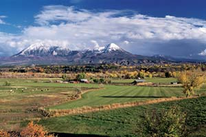
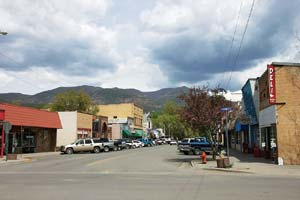

This little western slope gem was first established as a home base for coal miners, many of whom still occupy the bungalow houses of the downtown area. There also are many artists and musicians, merchants and new age post-hippies living in and around town. It’s a wonderful little place without traffic lights, where most people drive as if they were in their ’90s - no one seems to be in a hurry. The countryside surrounding Paonia includes many world-class apple, peach and cherry orchards, a few organic vegetable farms and vineyards, and the ranches of families that have been in the cattle business for generations.
Environmentalist Allison Elliot says, “We’re a diverse population, but we have a common goal: to make Paonia a great place.” The Blue Sage Center for the Arts has a similar goal. This nonprofit, community-run facility is housed in two classic buildings on Grand Avenue, the main drag through town. Whether you’re looking for a place to take yoga classes, have a wedding, or see a concert or art exhibition, the Blue Sage is it. On a typical night, local musician Mike Gwinn and the North Fork Flyers might be on stage, or local children performing The Lion, the Witch and the Wardrobe.
Life in Paonia is a blend of the old and new. An example of the old is the Bross Hotel, a painstakingly restored 1906 hotel furnished with antiques and handmade quilts - a great place to stay if you want to feel the slow, steady pulse of Paonia. Examples of the new are businesses that have chosen Paonia as home: Solar Energy International, which offers hands-on classes in photovoltaic technology, and Chaco Sandals, an employer of about 150 jobs. According to marketing director Brian Scranton, Chaco pays its employees to bike to work and volunteer in the community.
Do you live in Paonia? Have you visited? Please post your comments below.
Population: 1,589
Climate: January average temperature: 25 degrees. July average: 72 degrees.
Median House Value: $124,300
Natural Assets: Great rafting, fishing and camping at Black Canyon of the Gunnison National Park and West Elk Wilderness Area; bicycling on beautiful country roads.
Sustainable Initiatives: Citizen activism (such as the Western Slope Environmental Resource Council) to protect Paonia from over development and create local self-reliance.
|
 CELIA ROBERTS Rural landscapes surround the town of Paonia, Colo. |
 JON STAHL Downtown Paonia, Colo. |
|